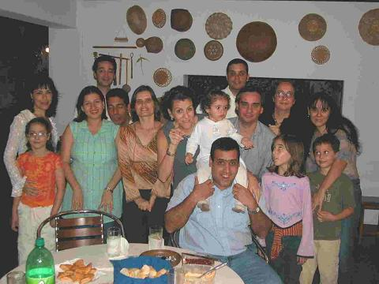
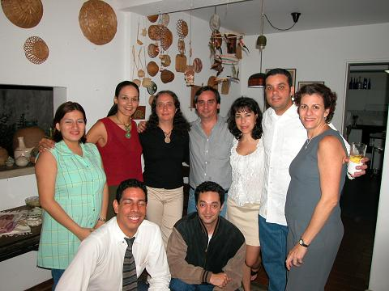
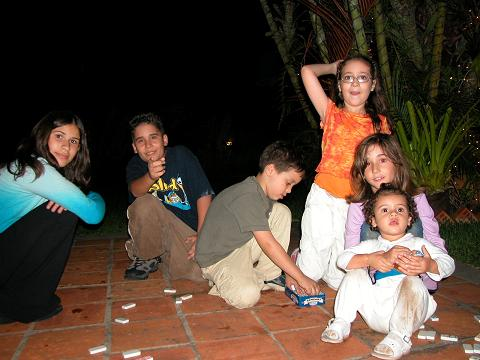

|
  Les contare solo hasta las 12 m, ya que hasta esa hora me quede, la gente responsable se va temprano, por que al dia siguiente hay trabajo, solo dire que como yo actue con prudencia y responsabilidad, lo hizo Mireyita y prole, y Rebequita y su prole. Luego, de las 12 no respondo por el desmadre que hallan hecho Juancarlo y sus secuaces, en la reunion, que recibio al jefe de la mafia china Francisco Hung, quien dice ser descendiente de mandarines, y que el pobre Mao hizo que se viniera a estudiar arquitectura por estos lares. Por supuesto, no podía faltar el regaño consabido de Natalia, al susodicho a ver si vuelve al redil en el matrimonio. Gaby, Marta esta emocionada con los amigos de tu esposo, que no sabe en que aerolinea va a montarse para caer por alla, pero de que no pierde el chance no lo pierde, imaginate si Menem pudo conseguir novia chilena, Marta puede conseguir novio Argentino. Siempre hay una vedette, y en la noche fue la perrita de la hermana de la polla, que tuvo 5 perritos (unos snausser) (me imagino que se escribe asi), por cierto Gaby con los perritos me acorde de los perritos que adoptastes. Glenda hizo gala de su barriguita, Juancarlo, Cora, Elizabeth (esposa de Rafael por cierto cumpleañera de la noche); agarraron pa cien a Glenda, diciendole lo que le espera, Ana Karina que no es bolsa pegando la oreja y tomando datos. En las fotos que tomo Marta, Natalia previo no sacar la lengua nuevamente, pero creo que la lengua se le va a salir es a Francisco, una pregunta en las fotos que vas a enviar Marta, ¿enviaras unas que tengan que ver con un chalet con playa privada, con el consabido soltero?, ¿o esas no las tomastes tu?. Las hijas de Rebeca aprovecharon para contar cuentos de la cripta al resto de los chamos, preocupandole la existencia a Simon. Pero lo que más me sorprendio es el peligro publico en que se ha convertido Camila, quien por poco acaba con el espejo que hay en toda casa, que hasta ahora la unica utilidad que le he visto al bendito espejo es que es utilizado para las fotos de todas las novias que se generen en una casa, la pobre chama no sabia que estaba atentando contra su propio matrimonio. Pero el hecho imperdonable de la noche, fue la inexistencia de la torta de chocolate de Cora. ¿Martica yo te lleve a la reunion?, cuando llegue a la casa me dije algo me falta, pero no recordaba que habia sido, por cierto, la pobre es un mar de lagrimas por la falta de Danielita. Rebequita y Mireyita, gracias por reingresar a las reuniones, es un ejemplo a seguir por ciertas personas que se salen del foro, por falta de chavismo, ninismo y oposicionismo. Por cierto la unica conversa que no entendi, fue una relacionada con un articulo 8, alguien del foro que me la explique, me imagino que ese articulo es principal para dilucidar conocimiento rural de los cubanos. Buenos amigos, si deje algo abajo de la mesa, seguro que fue por que la botella de whisky de los iunaite estate que trajo Francisco sin la pelotica que ataja la salida, ella puede haberme cegado los eventos. Bye, y hasta la next siguiente. Por cierto que será de la vida de Cristina Pereira, no he sabido más de mi sobrino Nicolas. Eduardo |